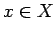
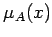

Inhalt Index DeskTop Bronstein

 Algebra und Diskrete Mathematik Fuzzy-Logik Grundlagen der Fuzzy-Logik Interpretation von Fuzzy-Mengen (Unscharfe Mengen)
Algebra und Diskrete Mathematik Fuzzy-Logik Grundlagen der Fuzzy-Logik Interpretation von Fuzzy-Mengen (Unscharfe Mengen)


| (5.350a) |
die für jedes Element  angibt, ob x Element der Menge A ist oder nicht:
| (5.350b) |
| (5.351) |
Mit anderen Worten: Jedem Element kann eine Zahl  im Intervall [0,1] zugeordnet werden, die den Grad der Zugehörigkeit von x zu A repräsentiert. Die Abbildung heißt Zugehörigkeitsfunktion. Der Funktionswert an der Stelle x heißt Zugehörigkeitsgrad. Die unscharfen Mengen A,B,C etc. über X werden auch unscharfe Teilmengen von X genannt. Die Gesamtheit aller unscharfen Mengen über X sei mit F(X) bezeichnet.